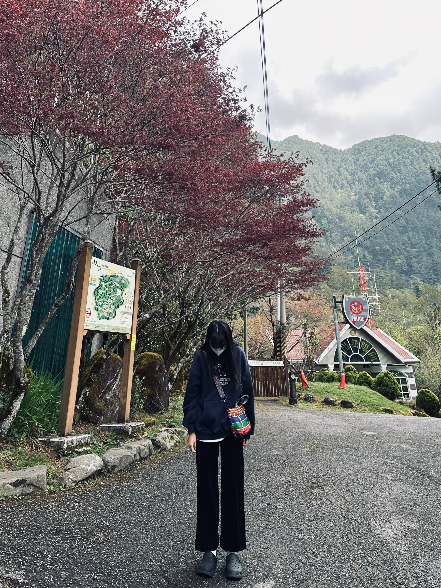
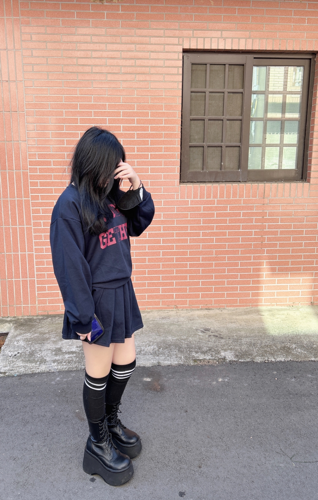
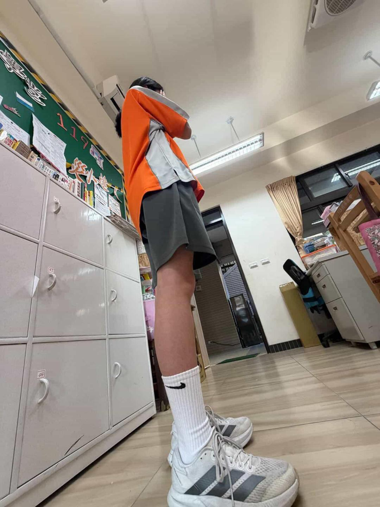
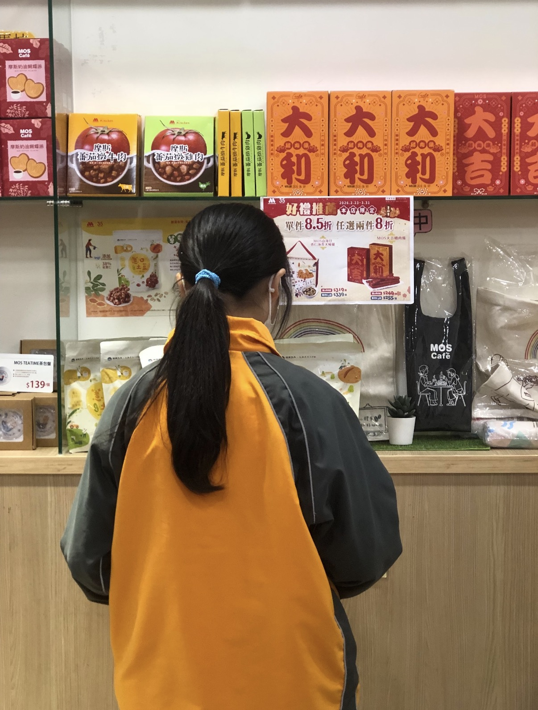

- 31號:巧克力
- 介紹:個性安靜，專長是唱歌。興趣是摸家裡的貓。目標是當一位專業的服裝的設計師，想要設計出好看
- 的衣服，用簡約的設計，裁縫出獨一無二的作品。
-
- 32號:熱可可
- 介紹：個性外冷內熱，外表看起來有點高冷，但如果跟我相處久了，就會發現我其實很熱情。就像一杯熱可可，看起來冷冷地，實際上很溫暖。興趣是唱歌，聽音樂和跑步。
-

- 33號:巧克力冰淇淋
- 介紹： 表面上開開心心的，但跟不熟的人就會有點冷淡。在朋友面前就跟冰淇淋，但是在陌生人面前，
- 就像一灘融化的水一樣。
-

- 34號:豆漿
- 介紹：像豆漿一樣，對不熟的人內向安靜，熟了就大大咧咧。沒什麼主見又偶爾愛反駁，不愛吵架，合
- 不來就默默疏遠，跟好朋友很有話聊。
-

介紹: 個 性樂觀，沒有特別專長，但能像能量飲料一樣給人精神，夢想是可以自己開一間獸醫診所，讓動 物們可以 保持健康，或當一位可以帶給別人正能量的調酒師，跟以前的朋友憶起完成夢想。

- 36號:大亨堡
- 介紹： 就像大亨堡一樣，簡單直接不做作，卻很有存在感，個性開朗直率不拘小節，像大亨堡一樣外表
- 看起來像麵包一樣乏味，但中間有像熱狗一樣熱情的心，總能帶來輕鬆自在的氛圍，讓人相處起來沒有壓
- 力。
- 37號:杜拜巧克力
- 介紹： 在別人不開心時可以逗別人開心，就像杜拜巧克力裡面的開心果內餡，讓別人吃一口，就可以充
- 滿愉快的心情。
-

- 38號:布丁
- 介紹： 像布丁般靜謐溫柔，入口是層層微甜，情感透明不藏心事，總是坦率表達；輕輕一晃便易碎，也
- 讓人學會珍惜此刻那份細膩而短暫的柔和滋味。
-

- 39號:抹茶布丁
- 介紹： 個性靜謐溫柔，甚至有點難猜味道，但入口後是微苦帶甜的層次感，像藏著心事的人，不會一開
- 始就被看透，卻越接觸越令人著迷，有種淡淡的神秘和距離感，看似平靜的外表，但背後其實藏著想被理
- 解的孤單和默默堅持的夢想。
- 40號:氣泡水
- 介紹： 像一瓶剛開瓶的氣泡水，外表看似透明平靜，內心卻藏著無數躍動的靈魂，不必添加多餘糖分，
- 單憑那股細緻卻有力的衝勁，就能在平淡的生活中，為你帶來最清爽、最難忘的驚喜點綴。
-

- 41號:棒棒糖
- 介紹： 在別人難過時，帶給別人歡樂，也可以向人訴苦。像別人常說不開心時，只要吃甜食或做其他自
- 己喜歡的事情就可以轉換自己的各心情了。
- 42號:期間限定商品
- 介紹： 我像7-Eleven的期間限定商品，每次出現都不太一樣。個性多變，喜歡嘗試新事物，在不同情境中
- 找到自己，目標是活出不一樣的自己。

- 43號:飯糰
- 介紹：我就像一顆飯糰，外表簡單樸實，但裡面藏著不同的味道。對不熟的人，我比較安靜內斂；但和
- 熟悉的人在一起時，就會變得開朗愛聊天，帶給身邊的人輕鬆自在的感覺。的興趣是聽音樂和跳舞，音樂
- 總能讓我放鬆心情，也陪我度過低落的時候；而跳舞不僅讓我更有自信，也讓我認識了一群重要的朋友，
- 讓我的生活變得更加豐富且有溫度。
-

- 44號:珍珠奶茶
- 介紹： 如果用食物形容我，我就像珍珠奶茶，平常安安靜靜像奶茶，但熟了之後就會變成很有嚼勁的
- 珍珠，一直講不停。
-